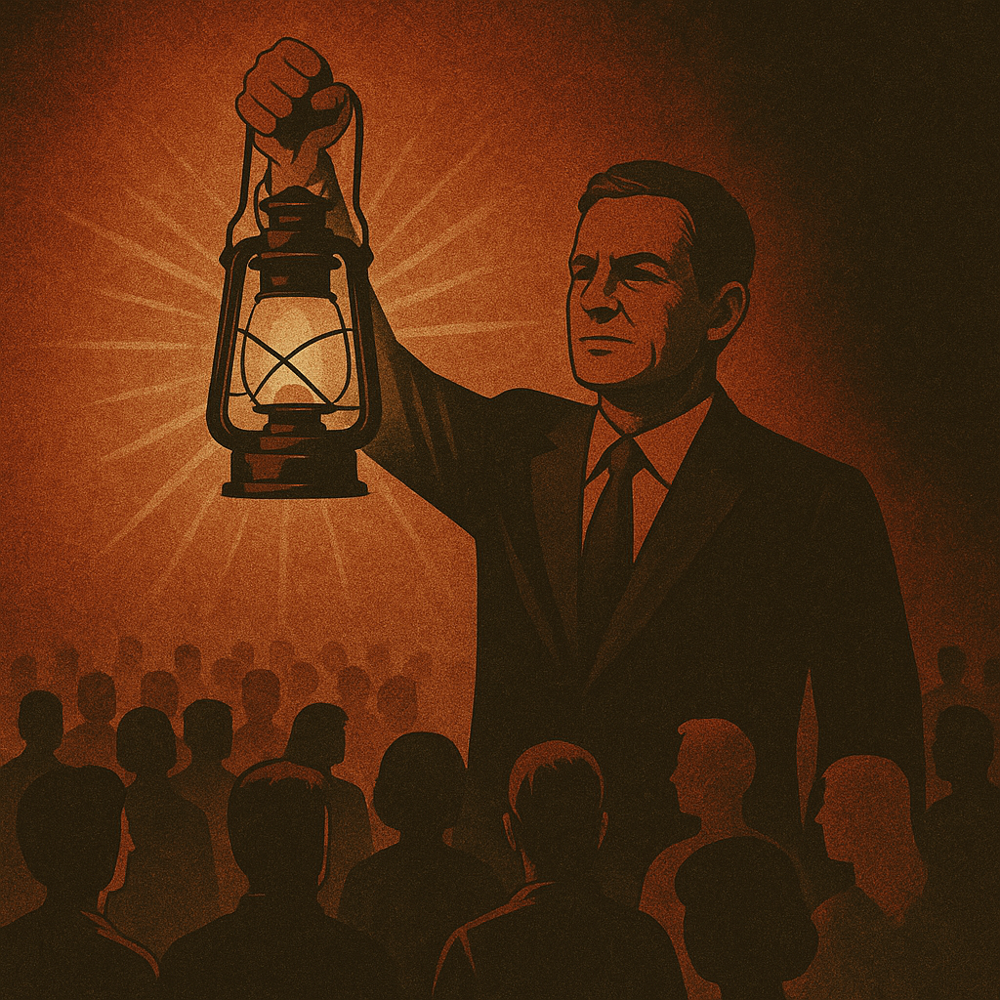

Publicado em 2025-05-11 09:01:18
Luís Montenegro declarou, em tom triunfal, que é “o farol deste país”. Fê-lo em plena campanha, rodeado de aplausos ensaiados e luzes de palco, como se fosse o guia luminoso de uma pátria perdida nas brumas. Mas muitos portugueses, com os pés bem assentes na realidade, olham para essa luz com desconfiança. Será farol que guia ou holofote virado para o espelho?
Autoproclamar-se farol implica autoridade moral, clareza de visão e uma trajetória imaculada. Mas Montenegro carrega nas costas não apenas a herança de um partido esgotado em promessas, como também os ecos de investigações e ligações que assombram a credibilidade do seu discurso. Fala como se viesse de fora do sistema — quando, na verdade, sempre lá esteve dentro.
Ao afirmar que “só anda com papões quem não tem soluções”, tenta desviar o olhar dos eleitores para o medo alheio, ignorando os fantasmas que o acompanham: o imobilismo político, os casos judiciais por esclarecer, as ligações a grupos económicos que sempre orbitam o poder. Montenegro diz que tem soluções — mas onde estão? Quais são? Porque não as vemos aplicadas nas câmaras, nas políticas ou na proposta de país?
O povo português já viu demasiados “faróis” falharem. Políticos que prometeram iluminar, mas deixaram tudo na penumbra da burocracia, do compadrio e da mediocridade. E quando a luz que se proclama não ilumina o caminho, apenas cega — transforma-se numa distração, não numa salvação.
Montenegro quer ser o guia, o iluminador, o condutor do futuro. Mas para ser farol, não basta declarar-se luz. É preciso merecê-la. É preciso rasgar o nevoeiro com verdade, romper com os jogos de sombras e provar que o brilho não vem do palco, mas do serviço ao país.
Portugal não precisa de mais figuras que se dizem faróis. Precisa de cidadania acesa, pensamento crítico e coragem para reconstruir — mesmo sem líderes que se achem divinos.
Porque o verdadeiro farol de um país não é um homem. É o povo desperto.
Por Francisco Gonçalves